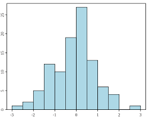

1 - Estadística descriptiva
1.1 Conceptos básicos de estadística:
- Definición Se refiere al análisis, resumen y presentación de resultados en el contexto de un conjunto de datos de una muestra o de una población completa. La estadística descriptiva incluye tres categorías principales:
- distribuciones de frecuencia
- medidas de tendencia central
- de variación
- Teoría de decisión La teoría de decisión nos ayuda a tomar las mejores decisiones posibles al analizar diferentes opciones y situaciones, utilizando criterios como la maximización del valor esperado para elegir la alternativa más beneficiosa.
- Población Una población es aquel conjunto del que estamos interesados en investigar, todos estos elementos o individuos tienen algo en común, y puede haber tanto población infinita como población finita
- Muestra aleatoria La muestra aleatoria nos dice que es un conjunto mas pequeño que el de la población, se podría decir que es una sola parte de la población, esto con el fin de hacer mas optimo los cálculos
- Parámetros aleatorios Los parámetros aleatorios son valores o un conjunto de valores con distintas probabilidades, son las características que son importantes para tomarlos, y nos ayuda a entender el comportamiento de la población en su conjunto
1.2 Descripción de datos:
- Datos agrupados Los datos agrupados son aquellos que están clasificados por categorías cada uno de acuerdo a un criterio especifico y cada dato u observación solo puede pertenecer a una de esta
- Datos no agrupados Los datos no agrupados son los que al recolectarlos se siguen manteniendo igual, no se la asigna una clasificación como a los agrupados
- Frecuencia de clase La frecuencia de clases es el número o porcentaje que se la asigna despues de agrupar los datos y de este se obtiene su marcas, se utiliza para poder representarlos en un histograma
- Frecuencia relativa La frecuencia relativa es la que nos indica que porcentaje pertenece a cada valor que tenemos en la muestra de los datos y al sumar todos estos nos debe de dar un 100%
- Punto medio El punto medio, es aquel punto de un conjunto ordenado de datos de mayor a menor este se encuentre exactamente por la mitad de ellos, en caso de encontrar dos valores por la mitad de deben de obtener su promedio
- Límites Los limites son dicen entre que valores se encuentran nuestros datos, cuando los datos estan ordenados podemos diferenciarlos porque son los valores que tenemos en los extremos
1.3 Medidas de tendencia central
- Media aritmética La media aritmética es prácticamente el promedio de los datos, la forma en la que se calcula es sumando todos los valores y después dividiéndola entre los numero de valores sumados, la formula se representa de la forma $$ \overline{x} = \frac{1}{n} \sum_{i=1}^{n} x_i $$
- n: es número total de observaciones
- x: la variable
- i: el incremento o posición de cada valor
- Media geométrica La media aritmética nos sirve para los cálculos de un promedio de porcentajes o en caso de que una distribución de datos sea muy dispersa y, es la forma más eficaz de obtenerlo
- n: es número total de observaciones
- x: la variable
- i: el incremento o posición de cada valor
- Media ponderada La media ponderada a diferencia de la media aritmética también obtiene un promedio pero en lugar de sumarlos y después dividirlo lo que hace es que le da el valor correspondiente a cada elemento
- n: es número total de observaciones
- x: la variable
- i: el incremento o posición de cada valor
- w: es el peso de ponderación
- Mediana La mediana se refiere a aquel valor en medio de todos los datos que obtenemos al ordenar de menor a mayor, en caso de que se encuentren dos valores en medio estos se deben de sumar y dividir entre 2
- Mediana = 3
- Moda La moda se ve representado por el dato que mayores veces se repite en un conjunto
- Moda = 2
- Medidas de dispersión Las medidas de dispersión nos dicen que tan cerca o alejados se encuentran los datos del conjunto, podemos encontrar muchos tipos de medidas de dispersión
- El rango
- Varianza
- Desviación
- Varianza La varianza es una medida de dispersión que nos dice como los valores se comportan de acuerdo a la media, si están muy cerca o por el contrario se alejan
- N: Es el tamaño de la población
- i: Incremento o posición
- μ: Es la media poblacional
- N: Es el tamaño de la muestra
- i: Incremento o posición
- x̅ : Es la media muestral
- Desviación estándar La desviación estándar también nos indica bajo que varianza se encuentran los datos del conjunto, este nos permite calcular de manera más exacta su valor
- σ: Es el tamaño de la población
- i: Incremento o posición
- μ: Es la media poblacional
- Desviación media La desviación estándar también nos indica la dispersión de los datos, pero se utiliza más para comprender su razón de aquella dispersión, la fórmula para calcularla es distinta , ya que nos da el promedio de las diferencias absolutas
- n: es número de datos
- x: son lo datos
- i: el incremento o posición de cada valor
- x̅ : Es la media del conjunto
- Rango El rango son aquellos valores que al ordenarlos están en los extremos para demostrar que tanta diferencia hay entre el valor mínimo al máximo
La fórmula es: $$\overline{X} = \sqrt[N]{X_1 \cdot X_2 \cdot ... \cdot X_N}$$
La fórmula es: $$ \overline{X} = \frac{N}{\sum_{i=1}^{N} \frac{1}{w_i X_i}} $$
Ejemplo $${0 , 1 , 1 , 2 , 2 , 3 , 4 , 5, 9 , 10 , 16} $$
Ejemplo $$ {0 , 1 , 0 , 2 , 2 , 1 , 2 , 1 , 1 , 2} $$
Podemos encontrar muchos tipos de medidias de dispersión como lo son:
En caso de que la varianza sea poblacional se ocupa la formula $$σ^2 = \frac{\sum_{i=1}^{N} (x_i - μ)^2}{N}$$ Donde :
En caso de que la varianza sea muestral se ocupa la formula $$s^2 = \frac{\sum_{i=1}^{n} (x_i - \overline{x})^2}{n - 1}$$ Donde :
Se calcula solo sacando la raiz cuadrada de la varianza La formula es: $$ σ = \sqrt{σ^2} = \sqrt{\frac{\sum_{i=1}^{N} (x_i - μ)^2}{N}}$$ Donde :
Su formula es: $$\text{Desviación media} = \frac{1}{n} \sum_{i=1}^{n} |x_i - \bar{x}|$$
La fórmula para calcularlo es: $$R = \max(x_1, x_2, \ldots, x_n) - \min(x_1, x_2, \ldots, x_n)$$
1.4 Parámetros para datos agrupados
Para el caso de los datos agrupados debemos de- Determinar el rango de los datos $$R = \max(x_1, x_2, \ldots, x_n) - \min(x_1, x_2, \ldots, x_n)$$ Establecido el rango debemos de establecer el número de clases (k) en que se van a agrupar los datos
Ejemplo:
| Muestra | Numero de clases |
| 0 - 99 | 6 - 10 |
| 100 a 199 | 7 - 12 |
| 200 - 300 | 10 - 20 |
1.5 Distribución de frecuencias
Distribución de frecuencia para datos no Agrupados:
En una distribución de frecuencia para datos no agrupados debemos de organizar y de ahí resumir los datos, todo esto en una tablaLos pasos a seguir son
- Recopilar los datos
- Ordenar los datos
- Contar las frecuencia
Distribución de frecuencia de clase o de datos Agrupados
La distribución de frecuencias para datos agrupados se refiere a cuando los datos ya se encuentran en una tabla ordenada por sus clase y frecuenciasEjemplo:
| Clase | Frecuencia |
|---|---|
| 10-19 | 5 |
| 20-29 | 12 |
| 30-39 | 18 |
| 40-49 | 7 |
1.6 Técnicas de agrupación de datos
La distribución tabular de datos estadísticos se encuentran ordenados en clases y con frecuencia de cada clase, combinando datos originales de varios valores para formar un intervalo de clases.1.7 Técnicas de muestreo
Una muestra seleccionada por muestreo de juicio puede basarse en la experiencia de alguien con la poblaciónMuestreo probabilístico
El muestreo probabilístico es que todos en una población tengan la misma oportunidad de ser seleccionados. Este método utiliza la teoría estadística para seleccionar al azar un pequeño grupo de personas de una población y luego predecir que todas las respuestas juntas coincidirán con la población en general.
Muestreo estratificado
El muestreo estratificado, es un tipo de muestreo consiste en que el objetivo de la población se separa en segmentos exclusivos, y luego una muestra aleatoria simple se selecciona de cada segmento.
Muestreo sistemático
El muestreo sistemático es un tipo de muestreo probabilístico donde se hace una selección aleatoria del elemento para la muestra, y luego se seleccionan los elementos posteriores utilizando intervalos fijos o sistemáticos hasta alcanzar el tamaño de la muestra deseado.
Consiste en lo siguiente::
- Definir el tamaño de la población
- Calcular el tamaño de la mestres
- Calcular el intervalo de muestreo (k)
- Seleccionar un punto de inicio aleatorio
1.8 Histogramas
Un histograma es una representación de los datos estadísticos, en donde se presentan en el eje horizontal las variables y el eje vertical las frecuencias, se presentada de manera gráfica y cada barra tiene el mismo ancho pero no largo
Ejercicios prácticos
Ejercicios de gráficas y frecuencias
2 - Fundamentos de la Teoría de Probabilidad
2.1 Técnicas de Conteo
Las técnicas de conteo nos ayuda en problemas de conjuntos ya que este nos permite decidir el número de resultados posibles en un total de combinaciones, ayuda a problemas grandes a hacerlos más fáciles de resolverHay distintos tipos de técnicas como lo son:
2.1.1 Principio additivo
El principio aditivo nos ayuda en los casos de realizar una actividad que a su vez, tiene muchas opciones para que sea realizada. Nos dice que si dos eventos ocurren al mismo tiempo, el número de formas que puede ocurrir el primer o segundo evento suma de m + n2.1.2 Principio multiplicativo
Para calcular la probabilidad de que ocurran dos eventos en secuencia.2.1.3 Notación Factorial
La notacion factorial se denota como n!, lo que nos idica que hay que multiplicar todos los numeros enteros positivos que hay entre ese numero al 1Se representa como: $$n! = n \cdot (n - 1) \cdot (n - 2) \cdot ... \cdot 2 \cdot 1$$
2.1.4 Permutaciones
Se refiere a el numero de formas distintas que podemos ordenar un conjunto de objetos distintosSu formula para calcularlo es: $$nPk = n \cdot (n - 1) \cdot (n - 2) \cdots (n - k + 1) = \frac{n!}{(n - k)!}$$
2.1.5 Combinaciones
Son el número de formas diferentes que se pueden seleccionar grupos de r elementos de un conjunto n no importa el orden y su formula es: $$\binom{n}{k} = \frac{n!}{k!(n - k)!}$$2.1.6 Diagrama de Arbol
Se representa graficamente enumerando todas las posibles ramificaciones y resultados de una serie de eventos2.1.7 Teorema del binomio
Expresa como desarrollar expresiones de la forma (a+b)^n Para dos numeros a y b, y un nmero entero n, se expresa de la forma:Su fórmula es: $$(a + b)^n = \sum_{p=0}^{n} \binom{n}{p} a^{n-p} b^p$$
2.2 Teorema fundamental de probabilidad
Establece que la probabilidad de qie ocurra al menos uno de varios eventos mutuamente ecluyentes es la suma de las probabilidades individuales de esos eventos2.3 Probabilidad de Eventos
Definición de espacio muestral
Es el conjunto de todos los posibles resultados de un experimento aleatorioDefinición de evento
Es un conjunto de resultados posibles de un experimento aleatorioSimbología
- A, B, C, … suelen representar eventos específicos.
- ∅ representa el evento imposible (conjunto vacío).
- 𝑆 representa el espacio muestral completo.
Unión
Se expresa como A∪B, y nos indica que todos los elementos que pertenecen a al menos uno de los eventos A o BIntersección
Se expresa como A∩B, y nos dice que los elementos pertenecen a ambos eventos A y BDiagramas de Venn
Es la representación gráficas que muestran las relaciones entre los conjuntos (eventos) utilizando círculos o áreas superpuestas que representan las Intersecciones y as uniones entre los conjuntos
2.4 Probabilidad con Técnicas de Conteo
Axiomas
Los axiomas son las reglas fundamentales de las asignacion de probabilidades a eventos:- La probabilidad de cualquier evento es un número real no negativo.
- La probabilidad del espacio muestral completo es 1.
- La probabilidad de la unión de eventos mutuamente excluyentes es la suma de sus probabilidades individuales.
Teoremas
- Teorema 1 Si f es un evento nulo o vacío, entonces la probabilidad de que ocurra f debe ser cero
- Teorema 2 La probabilidad del complemento de A, Ac debe ser, p(Ac)= 1 – p(A).
- Teorema 3 Si un evento A Ì B, entonces la p(A) £ p(B).
- Teorema 4 La p( A \ B )= p(A) – p(AÇB)
- Teorema 5 Para dos eventos A y B, p(AÈB)=p(A) + p(B) – p(AÇB)


2.5 Probabilidad condicional
Dependiente
La probabilidad condicional de un evento A dado que ha ocurrido otro evento B se denomina dependiente cuando la probabilidad de A está condicionada por la ocurrencia de B
Independiente
La probabilidad condicional de un evento A dado que ha ocurrido otro evento B se denomina independiente cuando la ocurrencia de B no afecta la probabilidad de A.
2.6 Ley multiplicativa
Se utiliza para calcular la probabilidad de la intersección de dos eventos (A y B)
2.7 Eventos independientes
Regla de Bayes
La probabilidad de que dos sucesos dependientes ocurran puede expresarse de la siguiente forma:
\( P(A \text{ y } B) = P(A) \times P(B|A) \), donde \( B|A \) se lee como \( B \) condicionada por \( A \).
También podríamos expresarlo cambiando \( A \) por \( B \), de la siguiente forma:
\( P(A \text{ y } B) = P(B) \times P(A|B) \)
Y como la parte izquierda de las dos ecuaciones es la misma, podríamos igualarlas y obtener otra ecuación diferente:
\( P(A) \times P(B|A) = P(B) \times P(A|B) \)
\( P(B|A) = \frac{P(B) \times P(A|B)}{P(A)} \)
Ejercicios en Jupyter
Ejercicios practicos de combinaciones y permutaciones
3 - Variables aleatorias
3.1 Variables aleatorias discretas
Una variable aleatoria se llama discreta si se puede contar su conjunto de resultados posibles3.1.1 Distribución de probabilidad en forma general.
Lista de los resultados de un experimento con las probabilidades que se esperan, se asociaran a esos resultados.3.1.2 Valor esperado
El valor esperado suele denominarse media o promedio "a largo plazo" Esto significa que a largo plazo de hacer un experimento una y otra vez, se espera este valor.3.1.3 Variancia
Medida del cuadrado de la distancia promedio entre la media y cada elemento de la poblacion. Si X es una variable aleatoria con una distribucion de probabildad, f(x), y media u. La varianza de X es:Desviación estándar
La desviacion estandar es una medida de dispersion, que indica que tan dispersos estan los datos con respect a la media.3.1.4 Función acumulada.
Es una funcion que se emplea para saber la probabilidad de que una variable aleatoria tome valores mas pequeños o iguales que un numero en concreto, sea cual sea su distribucion La distribucion acumulado f(x) de una variable aleatoria discreta X, cuya distribución de probabilidad es f(x)3.2 Variables aleatorias Continuas
Una variable aleatoria continua es aquella cuyos posibles valores forman un conjunto no numerable, típicamente un intervalo de números reales3.2.1 Distribución de probabilidad en forma general
una variable aleatoria continua está completamente descrita por su función de densidad de probabilidad 𝑓(𝑥)3.2.2 Valor esperado
Es el valor medio o promedio ponderado de una variable aleatoria continua X sea menor o igual a un dado X3.2.3 Variancia
Es una medida de dispersión que indica qué tan lejos están los valores de la variable aleatoria continua 𝑋desviación estándar
Es la raíz cuadrada positiva de la varianza y se denota por 𝜎3.2.4 Función acumulada
Es una funcion que da la probabildad de que la variable aleatoria sea menor o igual a un valor dado: x3.2.5 Cálculos de probabilidad.
Los calculos de probabilidad incluyen la determinación de la probabilidad de que la variable aleatoria caiga dentro de un intervalo especifico o sea menor o igual a un cierto valor.Probabilidad en un intervalo
La probabilidad de que X esté en el intervalo [a,b]Probabilidad acumulada
La probabilidad de que X sea menor o igual a un valor b se calcula usando la función de distribución acumulada:Variables aleatorias continuas: VIDEO
Enlace: CONTINUASVariables aleatorias discretas: VIDEO
Enlace: DISCRETAS4 - Distribuciones de Probabilidad.
4.1 Función de probabilidad
La función de probabilidad, también conocida como función de masa de probabilidad (PMF, por sus siglas en inglés) en el caso de variables discretas, asigna una probabilidad a cada valor posible de una variable aleatoria discreta. Para una variable aleatoria \(X\), la función de probabilidad \(P(X = x)\) cumple con las siguientes propiedades:
- \(0 \leq P(X = x) \leq 1\) para todo \(x\).
- \(\sum_x P(X = x) = 1\), donde la suma se extiende sobre todos los valores posibles de \(X\).
4.2 Distribución binomial
La distribución binomial modela el número de éxitos en una serie de \(n\) experimentos de Bernoulli independientes, cada uno con una probabilidad \(p\) de éxito. La función de probabilidad binomial está dada por:
\[P(X = k) = \binom{n}{k} p^k (1-p)^{n-k}\]
donde \(X\) es el número de éxitos, \(k\) es un entero entre 0 y \(n\), y \(\binom{n}{k}\) es el coeficiente binomial.
Código en Python
from scipy.stats import binom
n = 10
p = 0.5
k = 4
prob = binom.pmf(k, n, p)
4.3 Distribución hipergeométrica
La distribución hipergeométrica describe la probabilidad de \(k\) éxitos en \(n\) extracciones sin reemplazo de una población finita de tamaño \(N\) que contiene \(K\) éxitos. La función de probabilidad hipergeométrica está dada por:
\[P(X = k) = \frac{\binom{K}{k} \binom{N-K}{n-k}}{\binom{N}{n}}\]
donde \(\binom{a}{b}\) es el coeficiente binomial.
Código en Python
from scipy.stats import hypergeom
N = 100
n = 20
K = 10
k = 4
prob = hypergeom.pmf(k, N, n, K)
4.4 Distribución de Poisson
La distribución de Poisson modela el número de eventos que ocurren en un intervalo de tiempo o espacio fijo, con una tasa promedio \(\lambda\). La función de probabilidad de la distribución de Poisson está dada por:
\[P(X = k) = \frac{\lambda^k e^{-\lambda}}{k!}\]
donde \(X\) es el número de eventos y \(k\) es un entero no negativo.
Código en Python
from scipy.stats import poisson
lmbda = 3
k = 2
prob = poisson.pmf(k, lmbda)
4.5 Distribución normal
La distribución normal, o distribución de Gauss, es una distribución continua que se caracteriza por su forma de campana y simetría alrededor de la media \(\mu\). Su función de densidad de probabilidad está dada por:
\[f(x) = \frac{1}{\sigma \sqrt{2\pi}} e^{-\frac{(x - \mu)^2}{2\sigma^2}}\]
donde \(\mu\) es la media y \(\sigma\) es la desviación estándar.
Código en Python
from scipy.stats import norm
mu = 0
sigma = 1
x = 2
prob = norm.pdf(x, mu, sigma)
4.6 Distribución T-student
La distribución T de Student es una distribución continua utilizada cuando se estima la media de una población normal con una muestra de tamaño pequeño y se desconoce la desviación estándar de la población. Su función de densidad de probabilidad está dada por:
\[f(t) = \frac{\Gamma\left(\frac{\nu + 1}{2}\right)}{\sqrt{\nu\pi} \Gamma\left(\frac{\nu}{2}\right)} \left(1 + \frac{t^2}{\nu}\right)^{-\frac{\nu + 1}{2}}\]
donde \(\nu\) es el número de grados de libertad y \(\Gamma\) es la función gamma.
4.7 Distribución Chi cuadrada
La distribución Chi cuadrada es una distribución continua que surge de la suma de los cuadrados de \(k\) variables aleatorias normales estándar independientes. Su función de densidad de probabilidad está dada por:
\[f(x) = \frac{1}{2^{k/2} \Gamma(k/2)} x^{(k/2)-1} e^{-x/2}\]
donde \(k\) es el número de grados de libertad.
4.8 Distribución F
La distribución F es una distribución continua que surge en el contexto de la comparación de dos varianzas muestrales y se usa en análisis de varianza (ANOVA). Su función de densidad de probabilidad está dada por:
\[f(x) = \frac{\left(\frac{d_1}{d_2}\right)^{d_1/2} x^{(d_1/2) - 1}}{B(d_1/2, d_2/2) \left(1 + \frac{d_1 x}{d_2}\right)^{(d_1 + d_2)/2}}\]
donde \(d_1\) y \(d_2\) son los grados de libertad de los numerador y denominador, respectivamente, y \(B\) es la función beta.
Ejercicio 8 :VIDEO
Enlace: Ejercicio 85 - Regresión lineal
5.1 Regresión y correlación
5.1.1 Diagrama de dispersión
Un gráfico de dispersión es una representación gráfica de la relación entre dos variables, en la que cada punto del gráfico representa dos valores.
5.1.2 Regresión lineal simple
Un método para mostrar la relación entre una variable dependiente (Y) y una variable independiente (X) utilizando una línea recta que minimiza la distancia entre los puntos de observación, que es un cambiador de línea.
5.1.3 Correlación
La correlación representa la fuerza y dirección de la relación lineal entre dos variables. Un coeficiente de correlación cercano a +1 indica una relación positiva, un coeficiente de correlación cercano a -1 indica una relación negativa y un coeficiente de correlación cercano a 0 indica que no hay relación lineal.
5.1.4 Determinación y análisis de los coeficientes de correlación y de determinación
La correlación y la certeza son medidas estadísticas que permiten el cálculo de relaciones entre variables. El coeficiente (r) representa la fuerza y dirección de la relación lineal, y el coeficiente de determinación (r2) representa la proporción de la variación en la variable dependiente explicada por las variables independientes.
5.1.5 Distribución normal bidimensional
La distribución normal binomial describe la distribución conjunta de dos variables aleatorias que obedecen a una distribución normal. Se muestra gráficamente mediante formas tridimensionales o líneas planas.